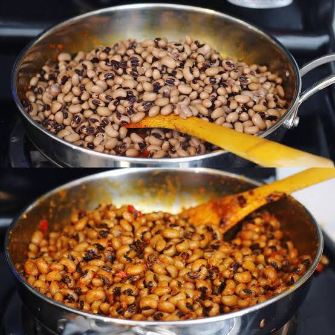

Recipe for Beans
My Recipe

Description
Beans is a proteinous meal,unlike noodles, it takes longer time to prepare. it can be served with plantain,egg, beef, can be eaten even with rice. Here's my guidelines to preparing it
Ingredients
2 cups of beansSeason the beans with salt to your taste. Turn off the heat, and allow to sit for 5 minutes before serving
- 100ml palm oil
- 2 larges Onions
- 3 Fresh bonnet Pepper
- 5 tbsp Ground dried shrimp (cray fish)
- Salt and Maggi to taste
Steps in Preparation
-
- Rinse the beans and place in a deep pot with 3 cups of water.
Boil the beans on medium heat until it becomes soft, it could take about 40 mins
- while the beans is boiling, bland your peppers, and onions and set aside, once the beans are softened from boiling (do not drain the water), turn the heat down to low, the pour in the blended pepper into pot.
- Allow the beans to cook for an additional 10 minutes with the tomatoes, then add in the crayfish,
maggi and palm oil. Stir, and cook for another 10 minutes.
- Season the beans with salt to your taste. Turn off the heat, and allow to sit for 5 minutes before serving